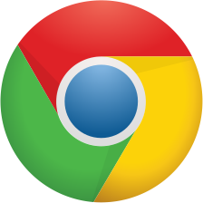

Introduction
The first web browser was invented in 1990 by Tim Berners-Lee. It was called WorldWideWeb (no spaces) and was later renamed Nexus. In 1993, Marc Andreesen created a browser that was easy to use and install with the release of Mosaic (later Netscape), "the world's first popular browser", which made the World Wide Web system easy to use and more accessible to the average person. Andreesen's browser sparked the internet boom of the 1990s. These are the two major milestones in the history of the Web.
The wars put the Web in the hands of millions of ordinary PC users, but showed how commercialization of the Web could stymie standards efforts. Both Microsoft and Netscape liberally incorporated proprietary extensions to HTML in their products, and tried to gain an edge by product differentiation, leading to the acceptance of the Cascading Style Sheets proposed by Hakon Wium Lie over Netscape's JavaScript Style Sheets (JSSS) by W3C.

The first Internet Explorer was derived from Spyglass Mosaic. The original Mosaic came from NCSA, but since NCSA was a public entity it relied on Spyglass as its commercial licensing partner. Spyglass in turn delivered two versions of the Mosaic browser to Microsoft, one wholly based on the NCSA source code, and another engineered from scratch but conceptually modeled on the NCSA browser. Internet Explorer was initially built using the Spyglass, not the NCSA source code. The license to Microsoft provided Spyglass (and thus NCSA) with a quarterly fee plus a percentage of Microsoft's revenues for the software.
In March 2009 Version 8.0 was released, with the first public beta having been released on March 5, 2008. IE8 offered better support for web standards than previous versions, with plans for improved support for RSS, CSS, and Ajax, as well as full compliance for Cascading Style Sheets 2.1. It was also the first version to successfully pass the Acid2 test. In addition, Internet Explorer 8 included new features such as WebSlices and an improved phishing filter.

The project which became Firefox started as an experimental branch of the Mozilla Suite called m/b (or mozilla/browser). After it had been sufficiently developed, binaries for public testing appeared in September 2002 under the name Phoenix.
Firefox 23 was released on August 6, 2013. It includes an updated
Google's Eric Schmidt opposed the development of an independent web browser for six years. He stated that "at the time, Google was a small company," and he did not want to go through "bruising browser wars." After co-founders Sergey Brin and Larry Page hired several Mozilla Firefox developers and built a demonstration of Chrome, however, Schmidt admitted that "It was so good that it essentially forced me to change my mind."
In December 2010 Google announced that to make it easier for businesses to use Chrome they would provide an official Chrome MSI package. For business use it is helpful to have full-fledged MSI packages that can be customized via transform files (.mst) - but the MSI provided with Chrome is only a very limited MSI wrapper fitted around the normal installer, and many businesses find that this arrangement does not meet their needs.